見直しの相談事項：見た目の案
決めていただいた ①②③⑨ のうち、画面の見た目が変わるところの案です。文や数字は例です。
① 下書きの PDF（エラーが残っていても、先生に途中経過を見せられる）
書き出しの窓エラーの一覧の下に「下書きの PDF を書き出す」を足す。提出用（透かしなし）は今まで通りエラー0のときだけ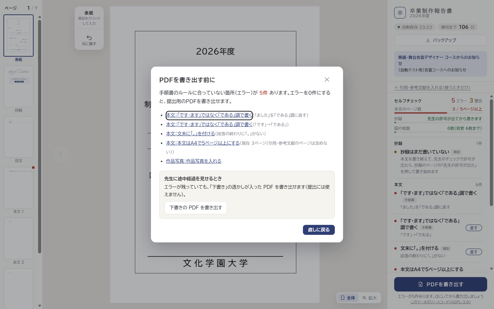
透かし 案A 斜めに大きく「下書き」どのページにも薄く入る。本文は読める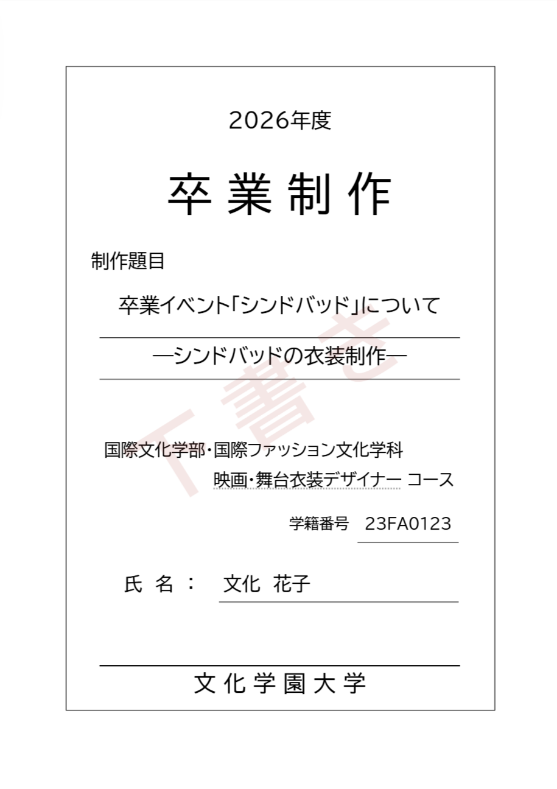
透かし 案B ページの上に帯上の余白に「下書き（提出用ではありません）」。本文に重ならない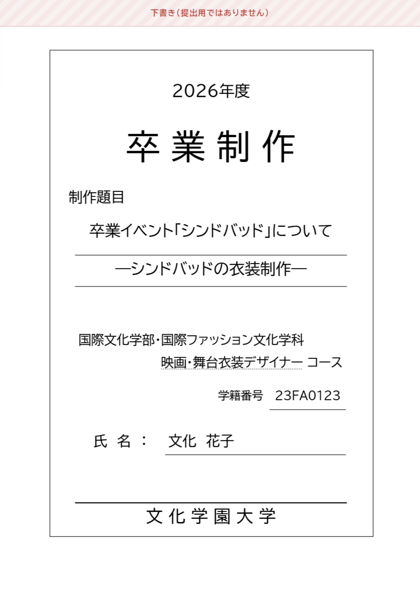
① 「確認済み」（手順書のルールではない「補助」の指摘を、学生がこのままにできる）
案A 指摘の下に「このままにする」押すと、その指摘はエラーに数えず、下の「確認済み」にまとまる（いつでも戻せる）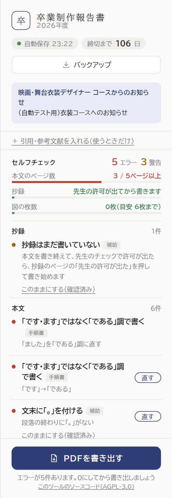
案B 指摘の右に「確認した」のチェックチェックを入れると、エラーに数えない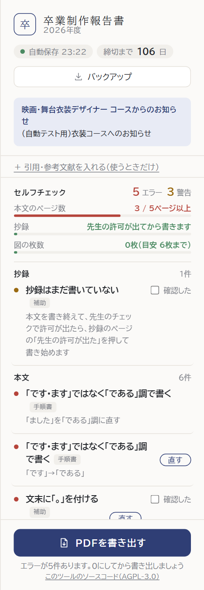
② ドライブ保存を止める切り替え（管理ページ）と、止めているときの学生の画面
案A 年度の設定のいちばん上に置く目立つので、障害のときにすぐ見つかる（画像は「止める」を選んだところ）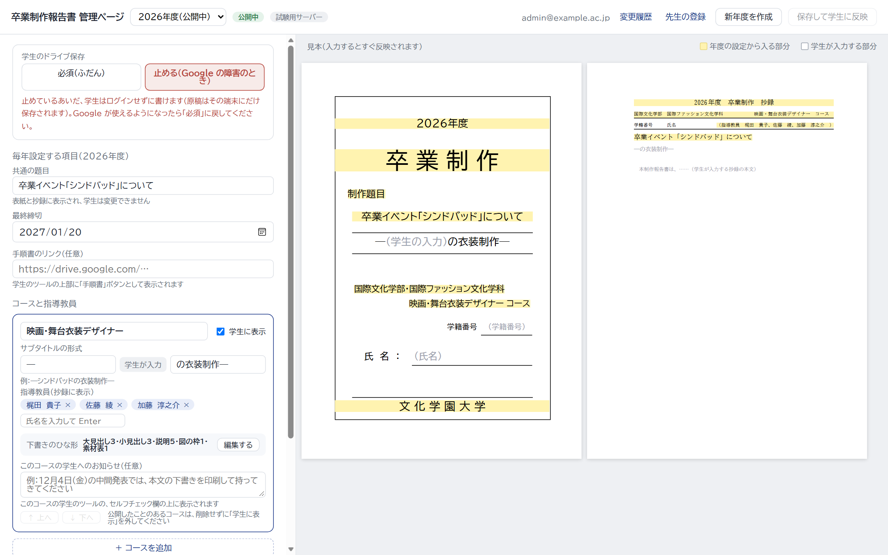
案B 「詳細設定」の中に置くふだんは隠れていて、間違って押しにくい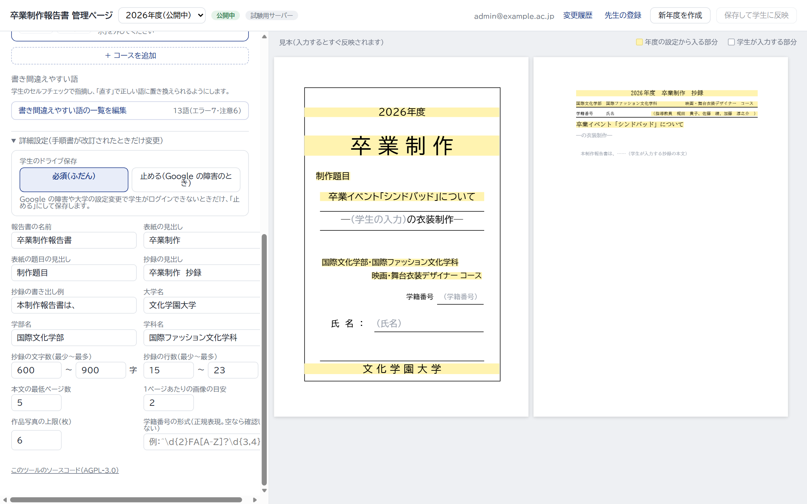
止めているときの学生の画面ログインの窓は出ない。右の欄に、止めていることを出す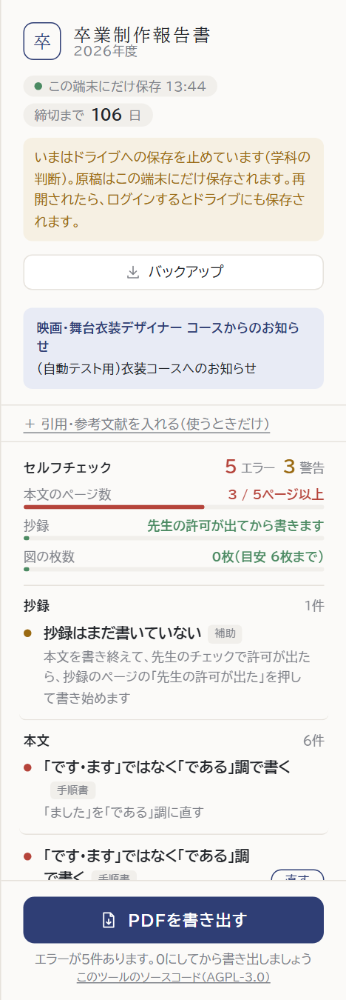
③ 同じパソコンで2つめのタブを開いたとき
案A 窓を重ねて、書けなくするログインの窓と同じ形。「こちらで続ける」を押すと、こちらで書け、もう一方のタブが書けなくなる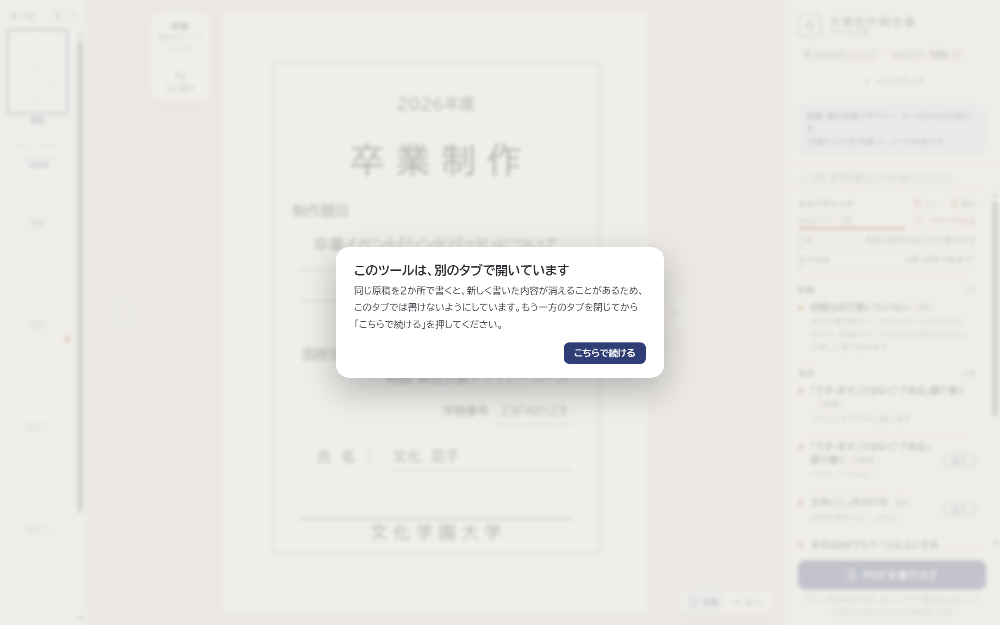
案B 上に帯を出して、見るだけにする原稿は見られる（書けない）。「こちらで続ける」で切り替え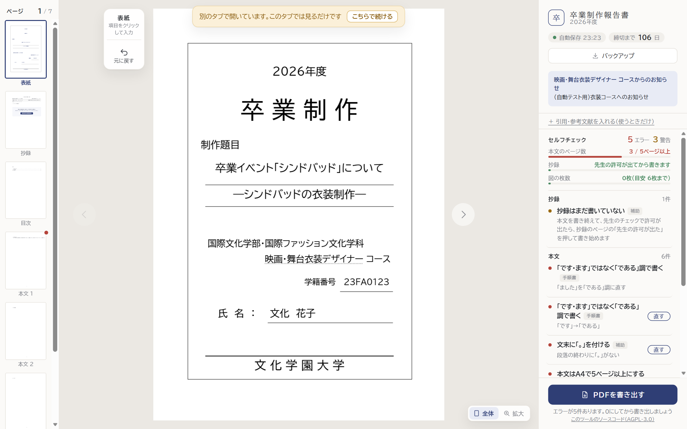
⑨ 文字の濃さ・大きさと、エラー・注意の印（右の欄）
今エラーと注意を、点の色（赤・黄）だけで分けている。説明の文字が薄く小さい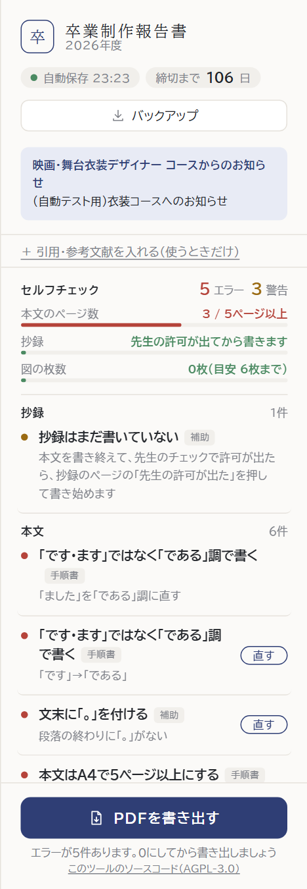
案A 印の形で分ける（× と !）＋文字を濃く大きく色が分かりにくい人も、形で見分けられる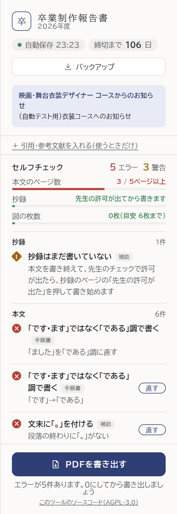
案B 「エラー」「注意」の文字を付ける＋文字を濃く大きくいちばん分かりやすいが、少しにぎやかになる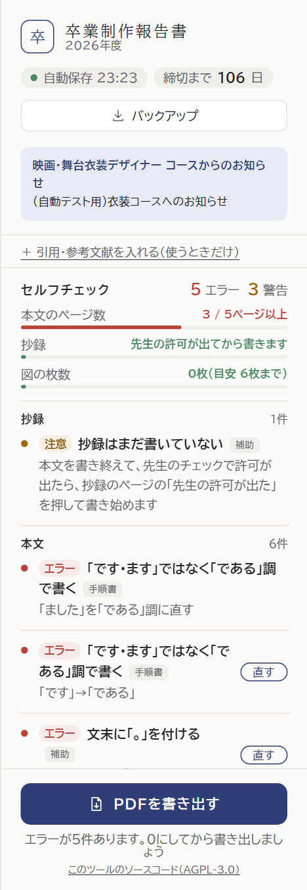